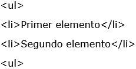
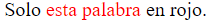

ETIQUETAS HTML
Primero vamos a saber y entender qué significa HTML.
Según Cordero, J. J. T. (2014), se define HMTL como el lenguaje estándar que se utiliza en la web para representar la información intercambiada por los usuarios en forma de documentos de hipertexto. Estos documentos contienen una serie de etiquetas que indican al navegador cómo interpretar y dar formato al texto plano.
Según Cordero, J. J. T. (2014).
Las etiquetas son acciones que se deben encerrar entre los símbolos menor que y mayor que (< >) dentro de estos símbolos se coloca la etiqueta deseada. Ej. . Si se desea cerrar la etiqueta se usa también el símbolo de barra inclinada (/), ejemplo;
Las etiquetas se dividen en tres partes; declaración inicial, de cabecera y de cuerpo.
es la declaración inicial e indica a los navegadores que se trata de un documento HTML 5.
son las etiquetas de apertura y cierre de todo el documento (incluye cabecera y cuerpo).
son etiquetas de cabecera que incluyen el título, la codificación de caracteres, etiquetas para los buscadores entre otros.
Indica la parte del cuerpo del contenido de un documento HTML. Es una etiqueta esencial para cualquier documento ya que indica donde empieza el contenido visible del documento.
 Usada para agrupar otros elementos y actuar como plantilla de otros controles, también ayuda a estructurar el documento en secciones.
Usada para agrupar otros elementos y actuar como plantilla de otros controles, también ayuda a estructurar el documento en secciones.
Ayuda a crear un enlace a una página web. Utiliza el atributo href (para referenciar el enlace) y el target (para saber si el enlace se abrirá en una nueva ventana o en la misma).
Ejemplo;
Pulsa para visitar DonDominio.
Permite resaltar un texto, colocarlo en negrilla.
 Permite hacer un salto de línea.
Permite hacer un salto de línea.
 Hay diferentes niveles de títulos, del 1 al 6. Las etiquetas
Hay diferentes niveles de títulos, del 1 al 6. Las etiquetas
Permite mostrar imágenes dentro del contenido. Necesita el atributo src y de alt para funcionar. El src indicará la ruta de donde traerá y mostrará la imagen, el alt permitirá dar una descripción de la imagen
Sintaxis:
Ejemplo:
- |
- y
- y
- "> Las etiquetas OL y LI se usan para crear listas, OL para listas ordenadas y UL para listas sin orden. Dentro de las listas, los elementos se identifican con la etiqueta LI.
Ejemplo:

- ">
Permite agrupar texto dentro de un parágrafo para hacer el contenido más organizado y fácil de leer.
Con esta etiqueta se puede personalizar el estilo de solamente una parte del texto.
Ejemplo:
El ejemplo anterior se mostraría de la siguiente manera:

Una etiqueta puede contener uno o más atributos, los cuales se deben separar por medio de espacios que permiten especificar la etiqueta. Lo que hacen los atributos es especificar la acción que se desea realizar, mientras que las etiquetas le indican al navegador qué elemento se va a describir o mostrar.
La sintaxis general es la siguiente:


Ejemplo;  . Esto indica que el borde de la tabla tendrá un valor de 2 para el grosor de esta tabla (Ver figura)
. Esto indica que el borde de la tabla tendrá un valor de 2 para el grosor de esta tabla (Ver figura)